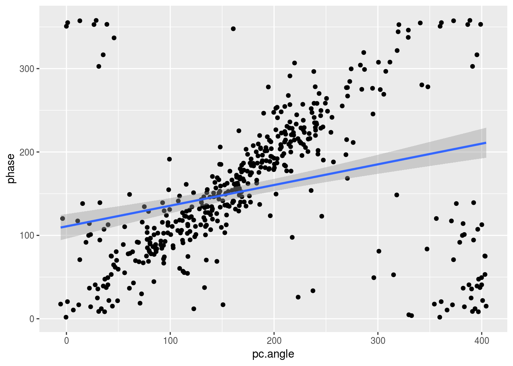
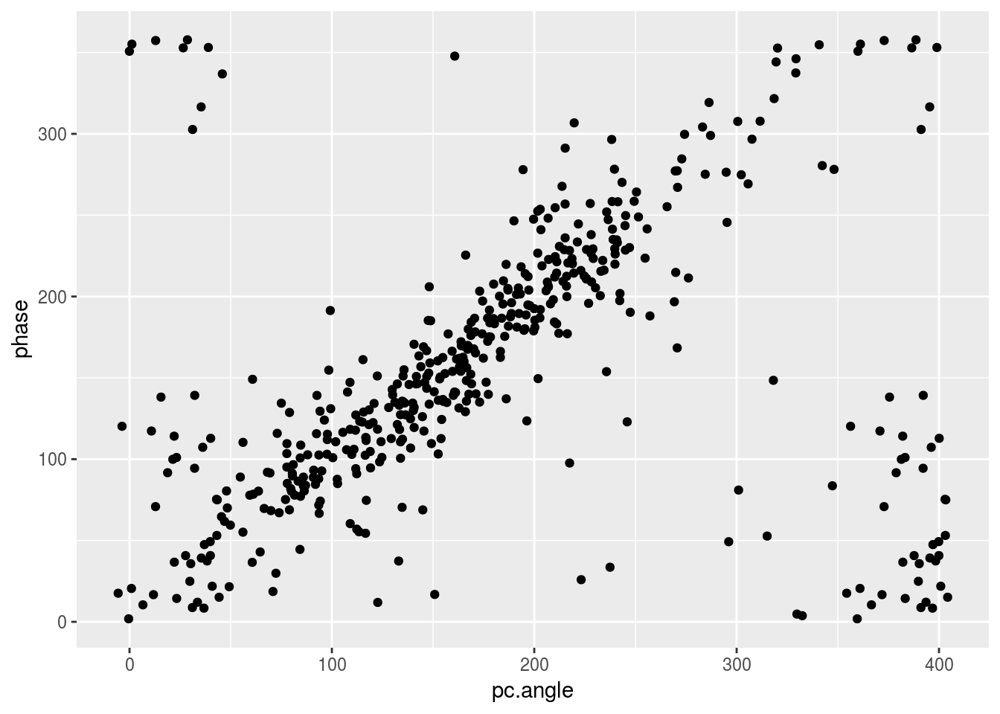
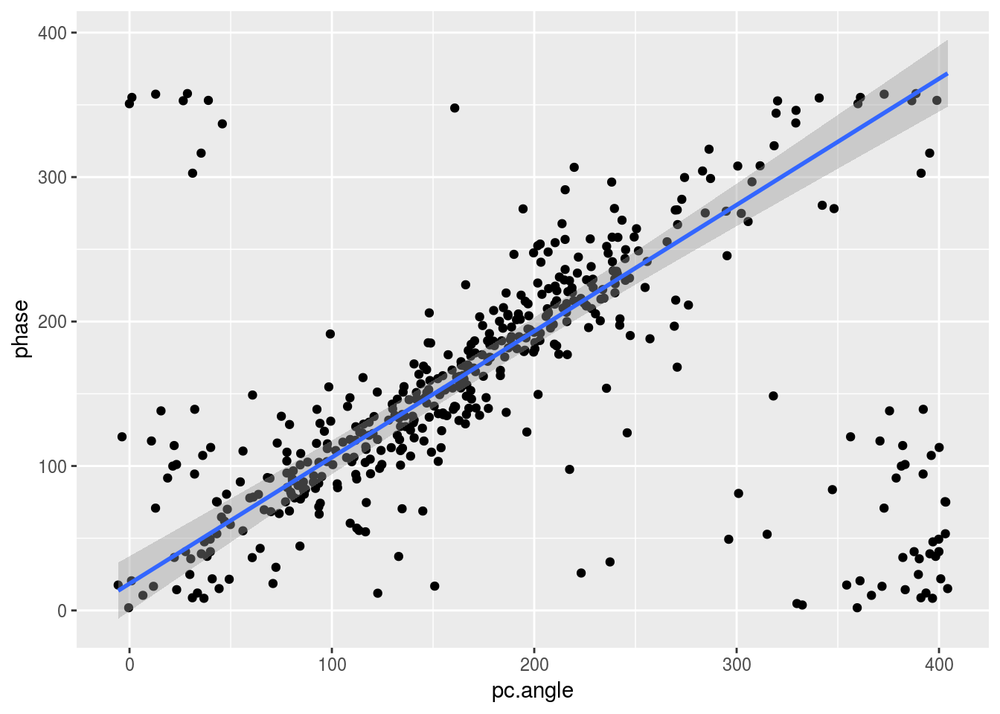
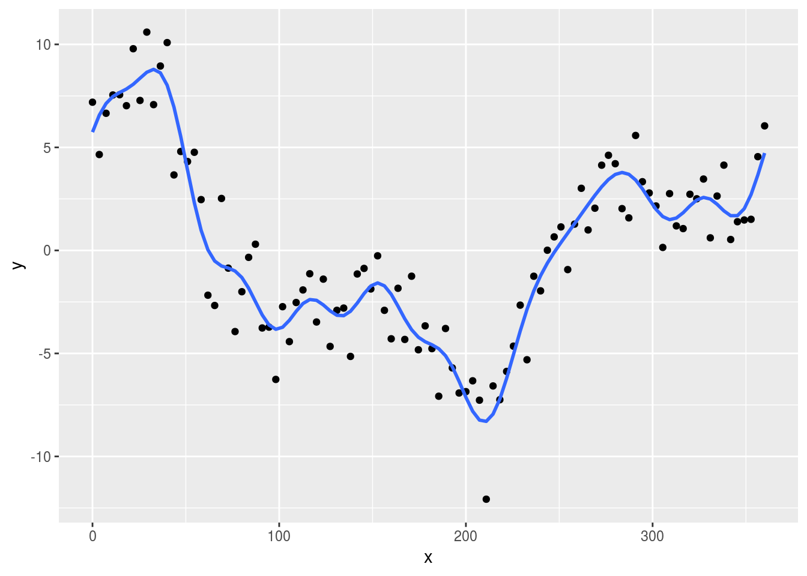
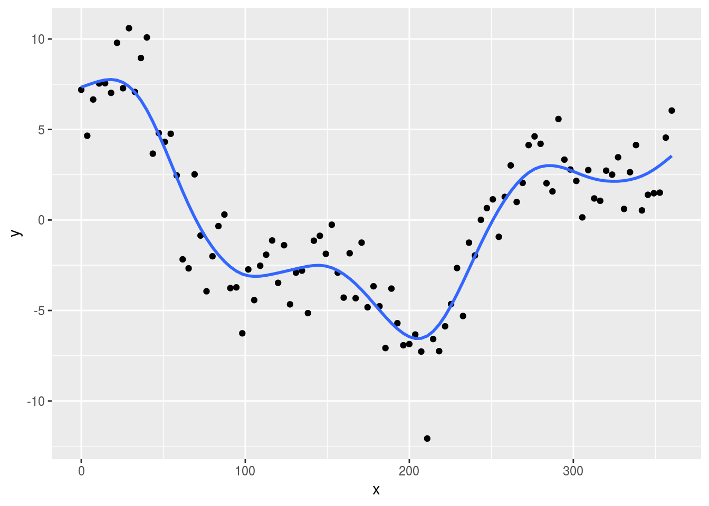

Tu propio smooth en geom_smooth()
Algo increíblemente satisfactorio de ggplot2 es la posibilidad de ajustar curvas a los datos de manera súper fácil con geom_smooth(). Para mi investigación estaba mirando la relación entre dos ángulos y me di cuenta que la recta ajustada por cuadrados mínimos no estaba funcionando para ilustrar la obvia estructura que había en los datos.
library(ggplot2)
df <- readRDS("data/smooth_example.Rds")
ggplot(df, aes(pc.angle, phase)) +
geom_point() +
geom_smooth(method = "lm")

Se me ocurrió que un mejor modelo podría ser usando el estimador de Theil-Sen, que es la mediana de todas las pendientes entre dos puntos distintos y está implementado en el paquete mblm. El problema es que al usar esa función como método, me dio este críptico mensaje de error:
ggplot(df, aes(pc.angle, phase)) +
geom_point() +
geom_smooth(method = "mblm::mblm")
## Warning: Computation failed in `stat_smooth()`:
## object 'mblm::mblm' of mode 'function' was not found

🤔
Tuve que ponerme a leer el código de ggplot2 para entender de dónde venía el problema, pero gracias a eso aprendí más sobre cómo funciona geom_smooth().
geom_smooth() acepta cualquier método para hacer el modelo, pero con dos detalles importantes:
la función que hace el modelo debe aceptar una fórmula como primer argumento y tener argumentos
datayweigths.el objeto que devuelve la función debe tener un método para
predictdf().
Lo primero es fácil de entender. Dentro de geom_smooth(), ggplot2 básicamente llama algo así como lm(formula, data, weights, ...). Si la función no acepta alguno de esos argumentos, nos encontramos con un error. La función mblm no entiende el argumento weights. La solución en ese caso fue crear mi propia función que llame a mblm::mblm() descartando ese argumento (y de paso le puse un nombre más inteligible).
TheilSen <- function(..., weights = NULL) {
mblm::mblm(...)
}
ggplot(df, aes(pc.angle, phase)) +
geom_point() +
geom_smooth(method = "TheilSen")

¡Mucho mejor! 🕺
El segundo requisito en este ejemplo viene “gratis” porque mblm() es compatible con los métodos de predict() de lm(), pero no siempre es así. En este segundo ejemplo, quiero hacer un suavizado que se base en hacer la transformada de fourier y eliminar una determinada cantidad de frecuencias. Una función que hace eso sería esta:
# n es la proporción de frecuencias que vamos a eliminar.
# n = 0.5 significa sacar la mitad.
FFTSmooth <- function(formula, data, weights, n = 0.5) {
f <- fft(data$y)
keep <- c(0, seq_len(floor(length(f)/2*n)))
keep <- c(keep + 1, length(f) - keep[keep != 0] + 1)
f[-keep] <- 0 + 0i
Re(fft(f, inverse = T))/length(f)
}
Notar que la función ignora por completo la formula y los pesos, pero hay que ponerlos para que funcione en geom_smooth(). Esta función sirve en el sentido de que hace un suavizado correcto de los datos (¡siempre que estén definidos en intervalos de x regulares!), pero si usamos geom_smooth(method = "FFTSmooth") ggplot2 nos va a tirar un error:
Computation failed in
stat_smooth(): no applicable method for ‘predict’ applied to an object of class “c(‘double’, ‘numeric’)”
El problema es que FTTSmooth() devuelve los valores suavizados, pero lo que tiene que devolver es un “modelo” que devuelva los valores suavizados al hacer predictdf(model, xseq, se, level) (donde xseq son los puntos de x donde se evalúa el modelo, se es TRUE o FALSE según si queremos un intervalo de confianza y level es el nivel de confianza de dicho intervalo). Esta segunda implementación del suavizado sí funciona.
FFTSmooth <- function(formula, data, weights, n = 0.5) {
f <- fft(data$y)
keep <- c(0, seq_len(floor(length(f)/2*n)))
keep <- c(keep + 1, length(f) - keep[keep != 0] + 1)
f[-keep] <- 0 + 0i
model <- list(x = data$x, pred = Re(fft(f, inverse = T))/length(f))
class(model) <- "my_smooth"
return(model)
}
predictdf.my_smooth <- function(model, xseq, se, level) {
data.frame(x = model$x, y = model$pred)
}
La diferencia importante en FFTSmooth() es que ahora devuelve una lista con los valores de x y los de y suavizados pero que tiene clase “my_smooth”. Cuando ggplot2 llame predictdf(model, ...), R va a buscar la función predictdf.my_smooth() (así es básicamente cómo funcionan las clases en R). predictdf.my_smooth(), por su parte, ignora casi todos los inputs y simplemente devuelve un data.frame con los valores de x e y guardados en el modelo.
set.seed(42)
df <- data.frame(x = seq(0, 360, length.out = 100))
df$y <- with(df, 5*cos(x*pi/180) + 3*sin(x*pi/180*3) + 1.6*rnorm(100))
ggplot(df, aes(x, y)) +
geom_point() +
geom_smooth(method = "FFTSmooth", method.args = list(n = 0.2))

¡Y listo! 🍰
Sólo hace falta definir predictdf.my_smooth() una vez. Por ejemplo, si queremos usar una Spline.
SplineSmooth <- function(formula, data, weights, span = 0.5, ...) {
pred <- smooth.spline(data$x, data$y, df = length(data$y)*span,...)$y
# print(pred[1:10])
model <- list(x = data$x, pred = pred)
class(model) <- "my_smooth"
model
}
ggplot(df, aes(x, y)) +
geom_point() +
geom_smooth(method = "SplineSmooth", method.args = list(span = 0.1))

Un resultado similar puede conseguirse de manera más directa con stat_rasa(), pero me pareció interesante urgar un poco dentro del funcionamiento de ggplot2.